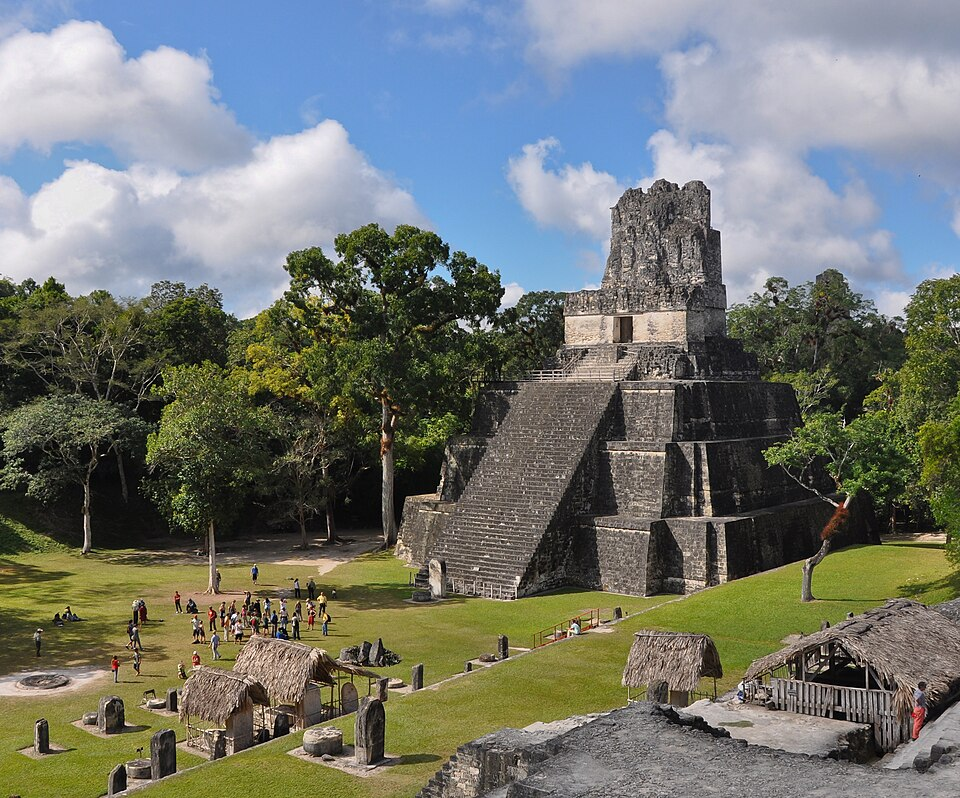

Maya cultures and histories
Maya history includes many languages, regional traditions, and political centres. Ancient monumental cities and contemporary Maya communities are connected histories, while particular practices and institutions changed over time.
Maize, artists and the work of royal courts
Maya inscriptions brought words, syllables and calendrical statements together in a writing system capable of recording names and events. They open a particular window into ancient political life. The languages of those texts sit within a much wider linguistic world: more than thirty Mayan languages are spoken today, and no single inscription represents every city resident.
Evidence: maya.nmai.si.edu [1] ↗ · maya.nmai.si.edu [2] ↗
Political change unfolded differently across that world. Many southern lowland dynasties lost power or population in the late first millennium, while other centers and communities followed their own paths. Movement and reorganization continued into later histories shaped profoundly by colonial intrusion. Maya people did not disappear when a particular court ceased to commission monuments.
Evidence: noma.org [1] ↗ · maya.nmai.si.edu [2] ↗
Maize agriculture supported the royal courts that became major centres of Maya artistic production. Courts gathered architects, sculptors, painters, scribes and specialists in ritual and celestial knowledge. Nobles and rulers commissioned objects that linked their authority with sacred powers. Jade ornaments, painted vessels and carved monuments made those relationships visible at different scales, from an object worn on a body to a stela in a public plaza. The prosperity of cultivation thus helped sustain specialized work and elaborate courtly lives.
Evidence: metmuseum.org [1] ↗
Writing brought history, ritual and art together. Scribes learned hundreds of signs and used them in books, on stone and on ceramics. Painted vessels and inscriptions preserve names, alliances and events that would otherwise be lost. Some artists signed their works, allowing individual makers to enter the historical record. Bark-paper books held calendrical and sacred knowledge. Their survival is very limited, but their importance is clear from the many representations of writing and from texts preserved in more durable materials.
Evidence: metmuseum.org [1] ↗
Maya knowledge also crossed the disruption of Spanish invasion. In the sixteenth century, scribes adopted alphabetic writing and recorded histories and sacred narratives in new forms. The K’iche’ Popol Wuj recounts creation, the origins of the sun and moon, and the discovery of maize. Modern Maya communities continue to maintain languages, sacred calendars and religious practices. These continuities belong in the same history as the Classic courts: political centres changed and colonial power intervened, while people continued making and transmitting knowledge.
Evidence: metmuseum.org [1] ↗


Temple II beside Tikal’s Great Plaza. The surviving monument combines a stepped pyramid, central stair and elevated sanctuary.
Tikal Temple II — Mike Vondran derivative work: MrPanyGoff. Image source · CC BY 2.0. Wikimedia-generated preview of the existing derivative credited to MrPanyGoff after Mike Vondran; no additional local edits. This image is not subject to the atlas’s noncommercial license.
Religion and ritual
Ceremony linked calendars, farming, sacred places, and political authority, with substantial local variation. Smithsonian accounts describe living Yucatec offerings connected with rain and harvests and highland Guatemalan ceremonies marking sacred-calendar cycles. These contemporary practices illuminate continuing relationships with time and land; they should not be projected unchanged onto every ancient temple or dynasty. Archaeological images and inscriptions add different kinds of evidence. Source 1 ↗ Source 2 ↗
Languages and writing
Maya is not the name of one uniform spoken language. Smithsonian describes more than thirty living Mayan languages. Ancient writing combined signs for whole words with syllabic signs; decipherment relates signs to the languages encoded in particular texts. A carved inscription can preserve royal names, events, and calendrical statements, but script affiliation does not establish the everyday speech of every resident of a city. Source 1 ↗ Source 2 ↗
Growth, political transformation, and survival
Maya centres developed through long Preclassic and Classic histories. During the late first millennium, many southern lowland dynasties and cities lost population or political power, while other regions followed different trajectories. Archaeologist Jeremy Sabloff emphasizes political fragmentation and population movement rather than the disappearance of Maya people. Northern centres and highland communities continued, followed by profound colonial disruptions and continuing Maya histories into the present. Source 1 ↗ Source 2 ↗
Places, finds and events on the map
The linked scholarly sources provide background. Site-level findings are mapped only with qualified dates and locations; this page does not invent settlement dots.
Explore in the interactive atlas
Open this era on global Explore ↗ · Open Americas atlas ↗ · Climate, sea level & ice-sheet context ↗
Read original Indigenous American texts
Explore original writing beside English translations: vessel labels, deliveries, property and irrigation, with pre-contact and colonial witnesses dated separately.
Further reading
Follow the history outward through these accounts. Encyclopedia links offer orientation; the studies and institutional sources provide the evidence behind this guide.
- Wikipedia — Maya civilization ↗ English
- Metropolitan Museum of Art — Treasures of Sacred Maya Kings ↗ English
- Metropolitan Museum of Art — Lives of the Gods: Divinity in Maya Art ↗ English
- Smithsonian NMAI — The Calendar System; Maya expert testimony and living practices ↗
- UNESCO — Palenque: mythological and dynastic sculpture ↗
- Smithsonian NMAI — The Maya ↗
Linked writing and images remain with their rights holders. Linking does not grant permission to copy. Sources, attributions & licenses lists the atlas’s sources and separately licensed material.
Research source
Research source and access status ↗
Consensus helped us discover literature for this separately authored deep dive. Its full Deep Research reviews are retained privately and are not reproduced here. Follow the source-status link to explore the research on Consensus; access may require your own account.
Page sources
- Smithsonian NMAI — The Calendar System; Maya expert testimony and living practices ↗
- UNESCO — Palenque: mythological and dynastic sculpture ↗
- Smithsonian NMAI — The Maya ↗
- Smithsonian NMAI — Reading the Calendar Glyphs ↗
- New Orleans Museum of Art — Interview with archaeologist Jeremy A. Sabloff on Maya political transformation ↗
- Metropolitan Museum of Art — Treasures of Sacred Maya Kings ↗
- Metropolitan Museum of Art — Lives of the Gods: Divinity in Maya Art ↗
The editorial summaries above use linked scholarly and institutional sources. Research leads do not replace the atlas’s individually reviewed evidence records.